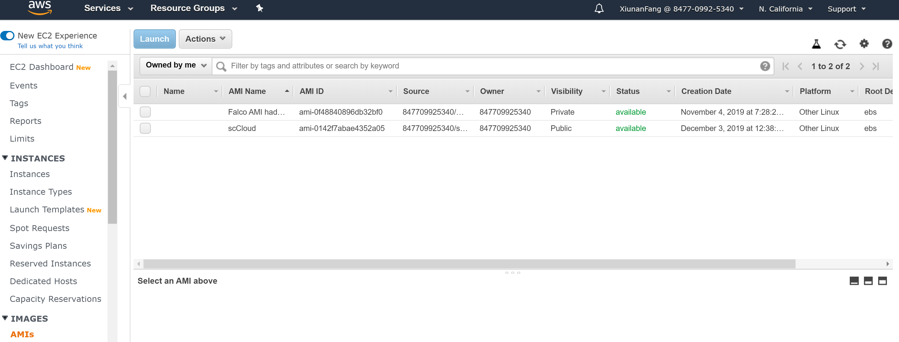

Chapter 5 Create AMI for Falco cluster nodes
5.1 Have a look at the Custom AMI for Falco framework with tools pre-installed
Falco has an alternative way to start the cluster without needing to run the software install script when the cluster is launched by using custom AMI (by specifying custom_ami_id option in emr_cluster.config). You will need to first create an AMI using the code in https://github.com/VCCRI/Falco/tree/master/source/ami_creator, by first launching the EC2 instance using launch-ec2.sh script (and then making sure that everything is installed properly), followed by running the create-image.sh script. When you run the create-image.sh script, it will create a new file called custom_ami_id.txt which will contain the custom AMI ID you will need to put into the custom_ami_id option in emr_cluster.config file. Once you have specified the custom_ami_id, you can set bootstrap_scripts option to just copy_reference.sh (instead of install_software.sh, copy_reference.sh). We already set up the image contains all the necessary softwares in this workshop, you can check the image with the name of Falco AMI hadoop. 